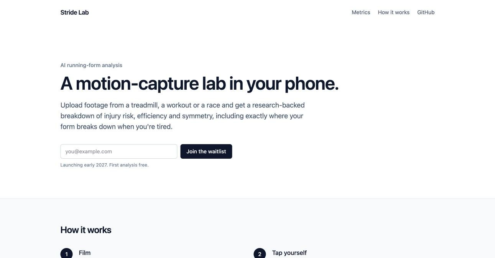

Stride Lab
pre-launch · 2026
A motion-capture lab in your phone. Film yourself running and get a breakdown of injury risk, efficiency and how your form changes as you tire.

problem
Gait labs are expensive, and most running apps only track pace and distance. Runners have no practical way to see how their form changes as they fatigue.
what i’m building
- Works on any footage: treadmill, workout or a handheld race clip.
- Eleven metrics from published biomechanics research, each shown only when the camera angle supports it.
- Fatigue drift: fresh vs. tired form across a session.
- A coach grounded in the measured numbers that recommends drills and does not diagnose injuries.
status
The marketing site and waitlist are live. The analysis pipeline comes after Mosaic ships.
stack
React, Vite, Tailwind, Supabase, Modal GPU workers, RTMPose, Claude, Langfuse.